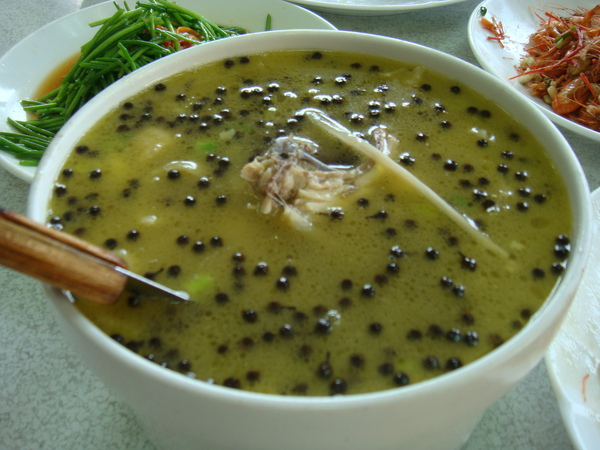

黑色顆粒狀為馬告，扮演著原住民料理中的重要催化劑充滿胡椒與薑氣味的馬告，是許多原住民族傳統飲食裡的常用且重要的香料。
新鮮馬告果實除了可直接食用外，洗淨曬乾後拌入食鹽就能長期保存成部落傳統料理中極佳的調味料。
不但提振食慾，賽夏族、泰雅族人也會搗碎馬告的新鮮果實，泡水飲用緩解宿醉後的頭痛
另外，早期太魯閣族人也會擷取馬告的部分根部熬湯飲用或貼於額頭，亦有減緩頭疼效果。
研究顯示其揮發性成分具安眠、鎮痛、抗憂鬱等調節動物中樞神經的活性
在生活步調快的城市裡，擦上一點馬告氣息，能讓思緒暫時逃離喧囂，踏進自然原野，你也可以感受大地帶來的奇幻味覺旅行。
馬告雞湯
1材料準備好,使用電鍋煮雞湯,超方便!
2將雞肉洗淨放入電鍋內鍋並加入水、薑、香菇、米酒。
3將馬告稍微破碎。
4放入馬告並且電鍋外鍋放入2量杯水。
5壓下電源開始烹煮至電源跳起,加鹽調味即可享用!!